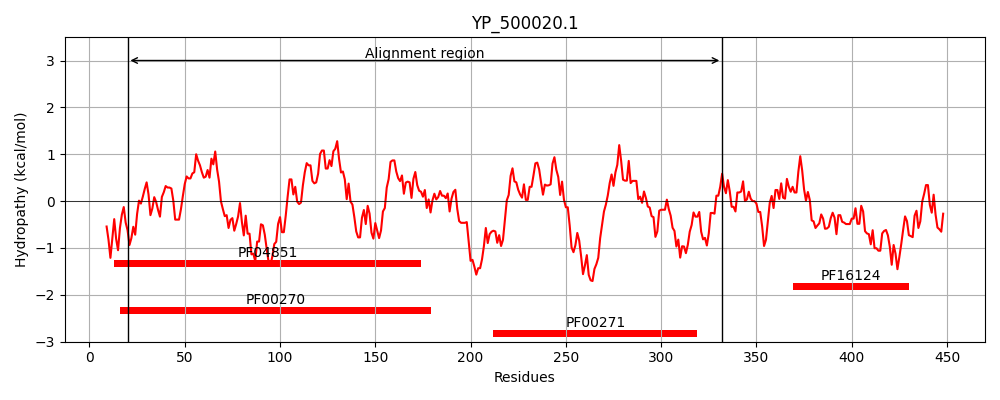
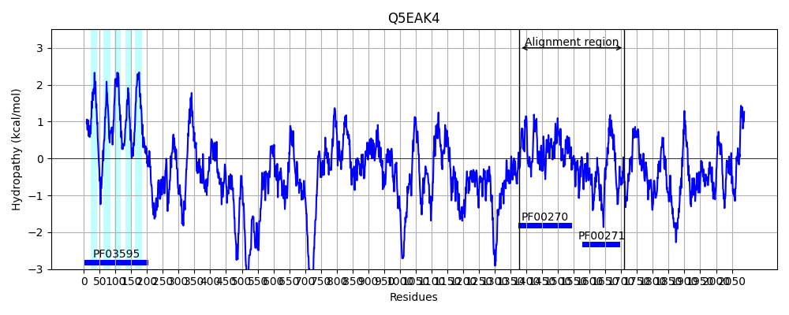

Hit Accession: Q5EAK4
Hit TCID: 2.A.16.2.2
Hit Description: gnl|BL_ORD_ID|14310 gnl|TC-DB|Q5EAK4|2.A.16.2.2 ATP-dependent DNA helicase tlh1 - Schizosaccharomyces pombe (Fission yeast).
Mach Len: 339
e:0.000000
Query TMS Count : 0
Hit TMS Count: 5
TMS-Overlap Score: 0.000000
Predicted Substrates:CHEBI:15595;malate(2-)
BLAST Alignment:
Score: 255 , Bit scores: 102 bits, E-value: 3.8e-23, Alignment length: 339, Percentage identity: 27
Query: 20 QEIIESIMSQQHTLGILPTGSGKSLCYQIPTYLSGKP----------TLIISPLISLMDDQVMQLKINGEKRVTCIHSGMDEIEKKHNIKCLRHSRFIFLSPEFLLQPSNFK----LISMIDFGMIVLDEAHCLSEWGYDFRPHYALIGKVTKHFKEAVVLALTATAPPHLQDDLTEMLAIQFNVIKTTMNRPNISFKHLNFHDDEDKIEWLLPFLQQS------GPTIIYVSSKKMCLNLAQLIYDSGFLTG----IYHGDMNYQERHTVQQQF--LNNDIPIIVATSAFGMGINKKDIRTIIHFHLSTSPSNYIQEIGRAGRDGELSQAISLFQPDD 332
Q + S++++ + + +LPTG GKSL + IP + K TL++ P++SL D M L++N + + C + + + ++ FI L+ E L S + L ++ +V+DEAH L G +R + +++ + A + L+AT P L+ + F V++ T F L+ +D+ + + L ++++ G II+ +KK + + ++ S IY GD++ +ER F N I++AT AFG+GIN +R ++H+ L S +Y+QE GRAGRDG+ + A ++ D
Sbjct: 1378 QSVYFSLLNRMNLITVLPTGGGKSLSFLIPALIEKKRQTPGKVMNMVTLVLVPMMSLRQD--MMLRVNEKGLLVCSGNWTAFKDVRLTLETQLPDLFI-LTYESALTNSGLRFFESLATLGRLARVVIDEAHLLLTSGA-WRTALSRASRLSGLY--APLHLLSATFPRQLEMVARQTFCTNFYVLRETSTARENIFYFLHPYDNTEFLLDLRTLMKRTKVFEGDGRAIIFCRTKKDVEYIHRRLHQSDLFAHTHVTIYTGDVSDEERQMNFDAFRNANGKTRIMIATKAFGLGINYMGVRLVVHYGLPASSMDYVQETGRAGRDGKYAIAALFYEKYD 1710 | Protein Hydropathy Plots: |
|---|
|  |  |
Pairwise Alignment-Hydropathy Plot:
|
|---|
 |